33.1. 2D Forming Setup
33.1.1. Geometry Type
33.1.2. Material List
33.1.3.Add objects
33.1.4. Workpiece
33.1.5. Positioning
33.1.6. Scheduled Positioning
33.1.7. Contact
33.1.8. Stopping Controls
33.1.9. Simulation controls
33.1.10. Generate DB
Geometry Type
In 2D Forming currently four types of geometry models (GEOTYP) can be setup as shown in Fig. 33.1.1.
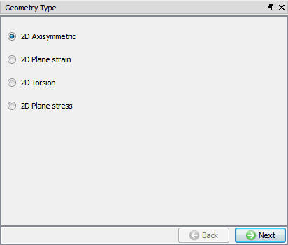
2D Geometry Type window
-
Axisymmetric
-
Plane Strain
-
Torsion
-
Plane stress
For more information about these geometry types please refer 9.1.2._Geometry_type_(GEOTYP)_[2D]
Simulation controls is
explained at the end of this chapter in section 33. 1.9. Simulation controls
Material List
In order for a simulation to achieve a high level of accuracy, it is important to have an understanding of the material properties required to specify a material used in DEFORM.
When setting up a simulation, material properties have to be specified for the objects.In MO Forming operation, all the materials required for the operation can be loaded at a time and the required material can be selected later as the problem
is setup. User can add material by selecting  load material data from library as shown in Fig. 33.1.2. User can select required material from the categories and then click on button as shown in Fig. 33.1.3.
load material data from library as shown in Fig. 33.1.2. User can select required material from the categories and then click on button as shown in Fig. 33.1.3.
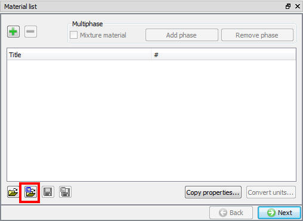
Material List window
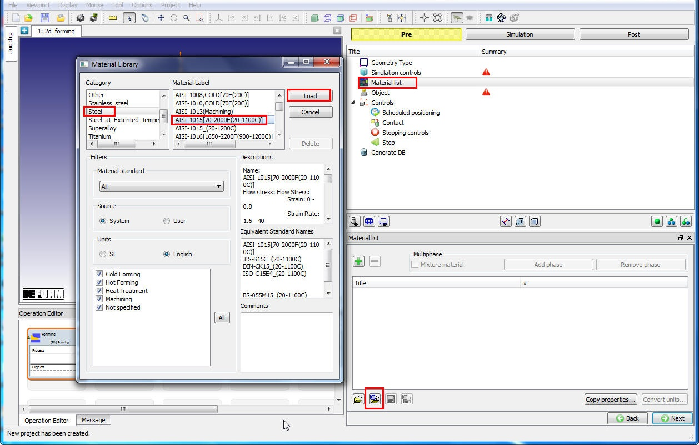
Import material from library window
(or)
Another way of adding material is by click on the material icon of the explorer tab, a list of materials from library that are grouped into different categories will appear as shown in Fig. 33.1.4. Select required material then click on  button. Also, user can add required material by drag and drop into the material window.
button. Also, user can add required material by drag and drop into the material window.
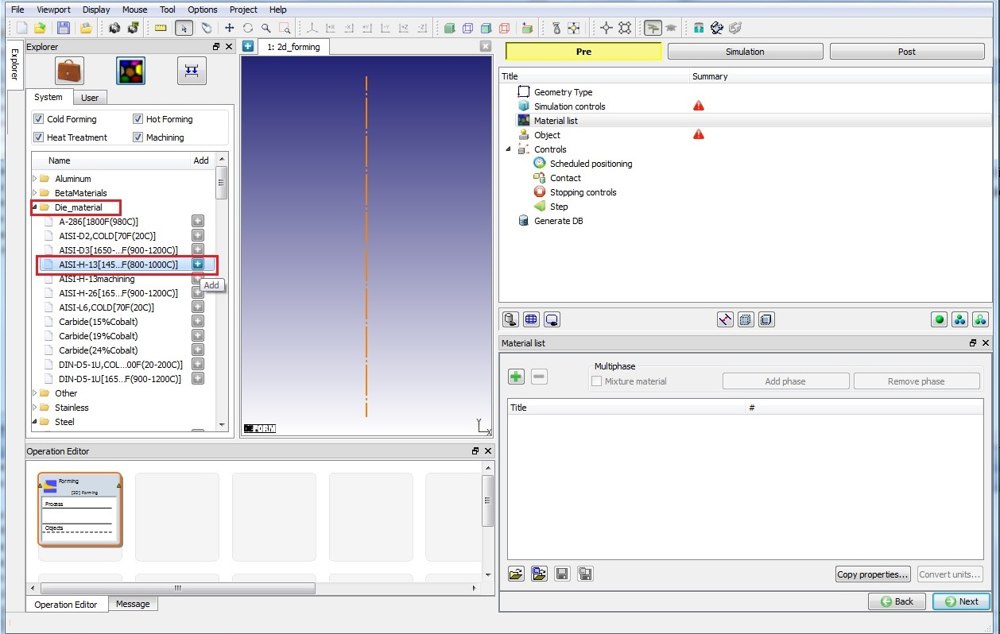
Add material from Explorer Material tab
(or)
In material list window, by clicking on  button, new material can be added. After adding material click
button, new material can be added. After adding material click  and select respective
tab to define required data for the simulation as shown in Fig. 33.1.5.
and select respective
tab to define required data for the simulation as shown in Fig. 33.1.5.
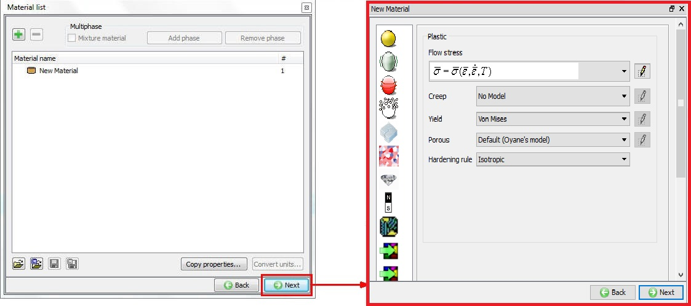
Add material from Material List window
Import Material data from a file  : It imports the material from a .Key or .DB file.
: It imports the material from a .Key or .DB file.
Load Material data from Library :It imports the material from Library.
Save the Material data to a file  : It saves the material to a file.
: It saves the material to a file.
Save the Material data to Library  : User can save the material to library using this option and can be loaded back as required in future for other simulations.
: User can save the material to library using this option and can be loaded back as required in future for other simulations.
Mixture material
“Mixture” materials (MSTMTR) are used when a phase transformation is to be modeled in the simulation. The transforming material is modeled as a “mixture” of its constituent phases. For example,
carbon steel might be modeled as a mixture of Austenite, Pearlite, Bainite, and Martensite. If a mixture material is defined, transformation rules should be defined which govern the transformation of one phase into another.(See Fig. 33.1.6.)

Adding Mixture material
Copy Properties
It is used to copy the regular material properties like plastic, elastic, thermal etc. from one material to other while creating/defining the material data as shown in Fig. 33.1.7. In this dialog, source and destination for copying the properties and properties to be copied must be selected.
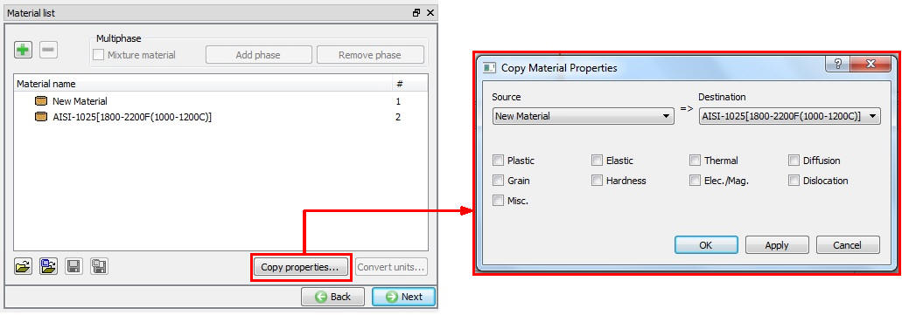
Copy material properties window
Convert Units
It is used to convert the unit system of current selected material from material list from SI to English or English to SI or user can use any other multiplication factor as shown in Fig. 33.1.8. Selecting the or button will display the respective multiplication factors
for converting from and , then selecting the button will convert and close the conversion window. This conversion table can be saved using save button and can also be edited by using wordpad/notepad and loaded back UNITCONV.DAT file
using load button.

Unit Conversion window
Add objects
User can add required number of objects for the simulation by selecting button. Fig. 33.1.9. shows
three objects added for a simple upsetting operation.
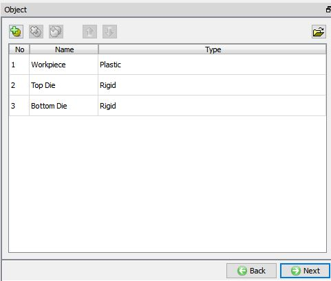
Objects Window
Workpiece
In this page user can define required temperature for the object and select type of the object as shown in Fig. 33.1.10. For workpiece by default the
object type selected is Plastic and user can also import object data from other DB’s or Keyfile’s from user defined library path or from problem directory path and even save the object data to Keyfile in user defined library or in problem directory path using respective
buttons.
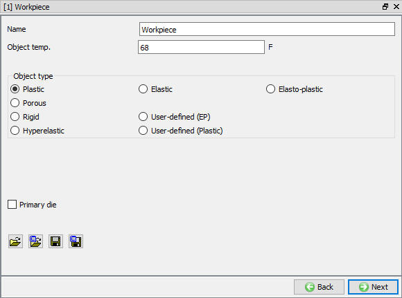
Workpiece window
Geometry
Geometry window is used to create the geometry of an object (see Fig. 33.1.11.).
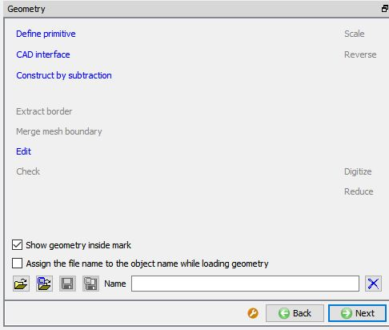
Geometry definition window
Define primitive 
For Axisymmetric or Torsion Type
There are six primitive shapes in geometry primitive page that can be used to generate geometries as shown in Fig. 33.1.12. In each case, the user has to scale appropriately to the problem by defining the dimensions.
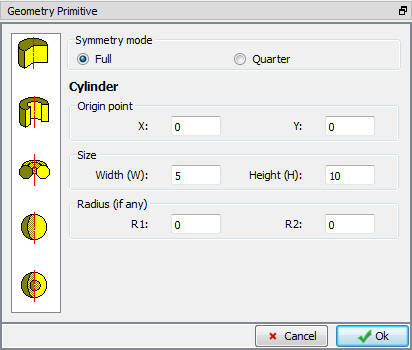
Geometry primitive window for Axisymmetric and Torsion
For Plane strain or Plane Stress Type
There are three primitive shapes in geometry primitive page that can be used to generate geometries as shown in Fig. 33.1.13. In each case, the user has to scale appropriately to the problem by defining the dimensions.
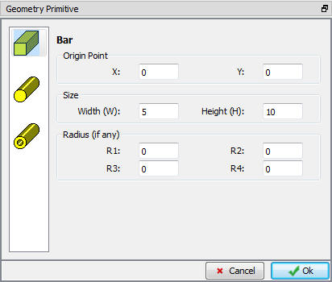
Geometry primitive window for Plane strain and stress
Check 
Once the geometry of the object is created, button gets activated. It is necessary to check the orientation of the geometry. This can be done by clicking on the
button. Check and correct Geometry window appears as shown in below Fig. 33.1.14. The Geometry gets corrected, if they are any errors ,when we click on button as shown in Fig. 33.1.14. A message saying, "Geometry is legal" will appear once the geometry is corrected or does not have any errors and then click on  . For more information please refer 12.1. 2D Geometry Data Defining section Check Geometry.
. For more information please refer 12.1. 2D Geometry Data Defining section Check Geometry.
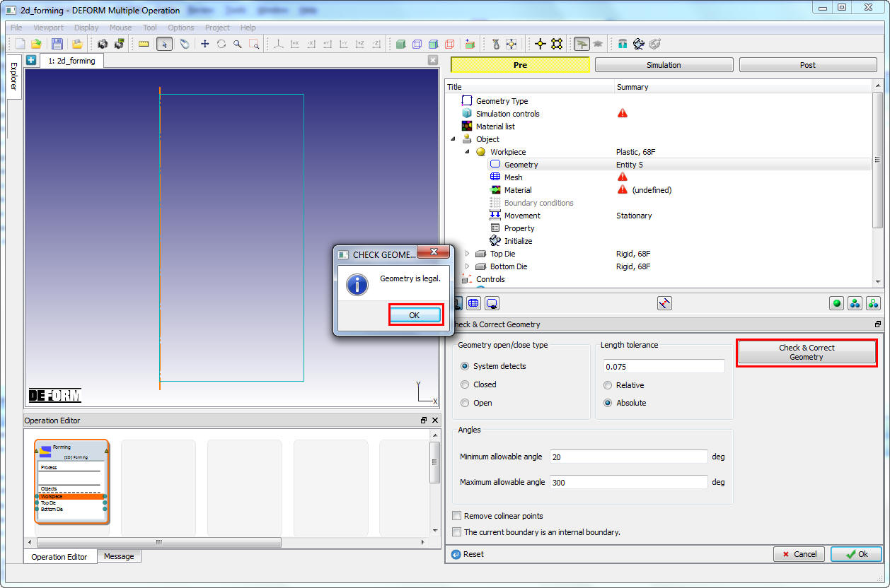
Check and correct Geometry window
Scale
Geometry can be scaled in forming operation to accommodate thermal expansion by specifying the scaling factor (See Fig. 33.1.15.). The scaling factor
can be calculated by temperature differential and temperature dependent material data. The scaled geometry can be saved into different Geometry saving formats.
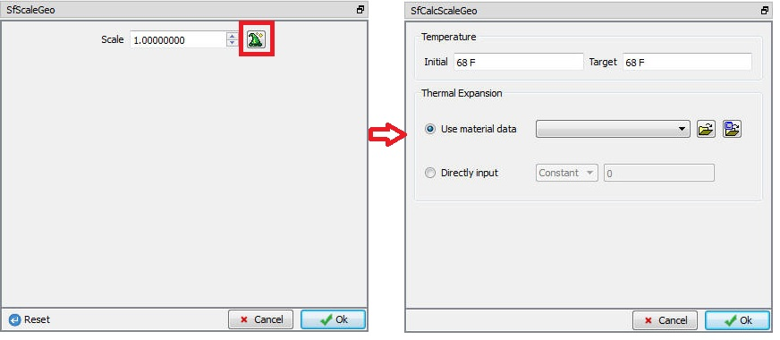
Scale Geo window
Reverse
This feature reverses the orientation of the geometry. Orientation of the 2D geometry must be always inside for single loop geometry, for multiple loop geometry the loop which share between the two regions can have the orientation on either side but
topology must be defined.
Extract Border
This feature extracts the geometry data from the current database meshed object for all object types except the rigid object.
Construct Geometry
This option is used to create geometry by subtracting geometry of other objects that are already present. Here the starting point, width and height of the object geometry from which other geometries to be subtracted must be specified as shown in
Fig. 33.1.16.
.
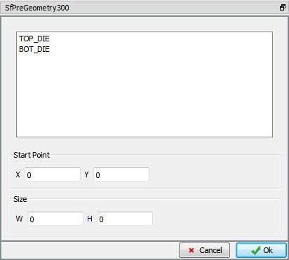
Construct geometry Window
Edit 
The Geometry editing option is used to create geometry for an object or edit the existing geometry. Imported geometry can be modified in Edit Geometry window. In Geometry page click on label and observe the options available to create and modify the geometry as shown in Fig. 33.1.17.
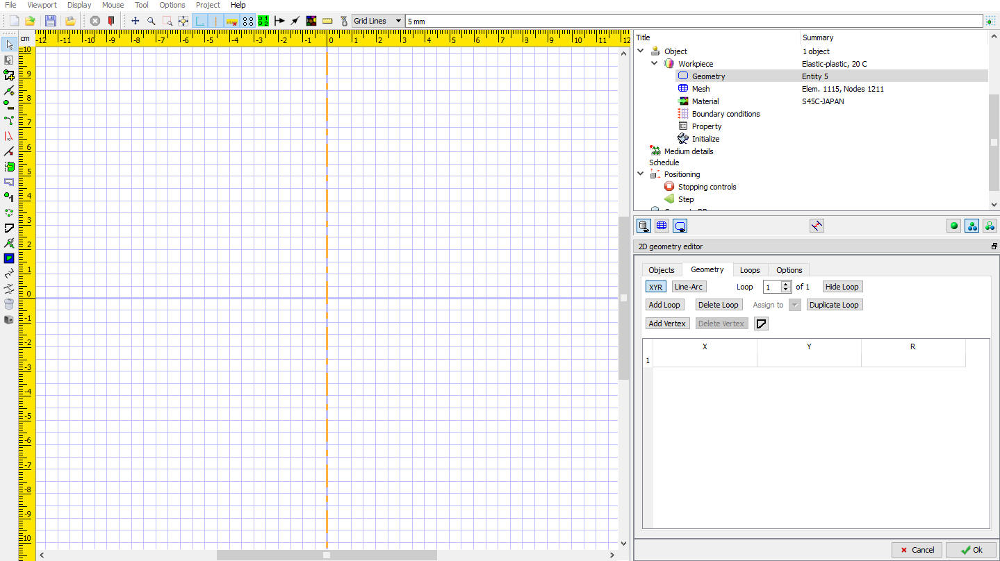
Edit Geometry Window
Various options available for editing 2D geometry are explained below,
Select : is used to select the vertex or Edge of the geometry.
Area select : is used to select the geometry more than one entity within a box..
: is used to select the geometry more than one entity within a box..
Create Loop : is used to create the geometry loop by creating points and connecting them.
Add Point to loop : is used to add the new points to an existing loop.
Delete point  : is used to delete the point in the loop.
: is used to delete the point in the loop.
Round corner : is used to create fillet at selected point.
Set angle : is used to change the angle of edge.
Move : is used to reposition the point by dragging it to other location.
Move to centerline : is used to move the loop's nearest point to centerline
Offset : is used to resize the geometry loop.
Make First point : is used to make the selected point as first point in a loop, this will be used for closed loop, we cannot select an arc mid point as first point.
Reverse direction : is used to reverse the direction of loop to change the orientation of the geometry. The geometry should be created in Counter clockwise, if the
geometry is created in clockwise, using this option we can change the direction of loop.
Close loop : is used to close the open loop.
Split loop : is used to split the loop at selected point.
Sub loop : is used to select a inner loop as sub loop in case of multi loops topology, by selecting this we can assign the material for a multiple
loop geometry.
Join loops : is used to merge the 2 loops by selecting the loops to be joined,the end point of the first loop will be joined to the first point of the second loop.
Join all loops : is used to merge all loops.
Delete selected : is used to delete the selected loops or edges.
Delete unselected : is used to delete the un selected loops edges.
Show Vertex : is used to display the vertexes of the geometry.
Show Vertex numbers
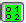
: is used to display the vertexes number of the geometry.
Show Inside : is used to show the orientation of the geometry.
Show Edge direction : is used to plot the direction of loop created.
Show Material : is used to load and assign the material to the geometry region.
Grid Lines: It shows the Grid Lines in Horizontal and Vertical direction in Display window. (See Fig. 33.1.18.)
Grid Points: It shows the Grid Points in Horizontal and Vertical direction in Display window.(See Fig. 33.1.18.)
Grid None: When this option is selected, the Grid points and Grid Lines in Horizontal and Vertical direction are not displayed in Display window. (See Fig. 33.1.18.)
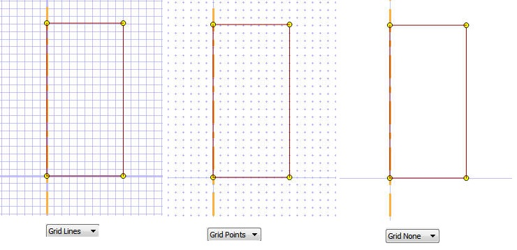
Grid Definition Window
Show Axis : Shows the Axis in the Display window
Show Centerline :Shows the centerline in the Display window
Fit All : Fits all displayed entities into the current viewport.
Box Zoom : The zoom window function allows close up inspection of a small region of the currently defined entities. The zoom region is selected by holding Ctrl + Alt
key and clicking the left mouse button, while dragging the mouse to enclose the selected region with the displayed box. When the mouse button is released the selected region will fill the display window.
Zoom : The zoom dynamically changes the size of the region of the object which fills the active view port. The view size can be changed by holding Alt key and clicking left
mouse button in the active view port, and rolling the mouse backward or forward to increase or decrease the size of the object in the display window.
Panning : Pan adjusts the region filling the active viewport without changing the size of the displayed object.
2D Geometry Editor
Geometry tab
Under Geometry tab, we can enter or modify the geometry entities. Geometry entities can be entered in two methods, in Line-Arc method and XYR methods.
XYR Method
The XYR format (DIEGEO) consists of defining an X coordinate, a Y coordinate, and a radius for every point of the geometry defining an object. An arc with the specified radius is drawn connecting the lines that would have intersected at the point defined by
the X and Y coordinate. (See Fig. 33.1.19.)
The XYR Table appears directly in the Geometry window. This table allows specifying and/or editing an object's geometry through a number of points in the XYR format. X and Y are the x- and y-coordinates of the point and R is the radius of
the point (if it is to define a curved line).
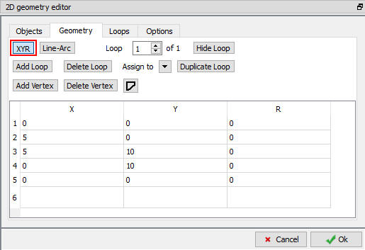
2D Geometry Editor with XYR Geo type
Line-Arc Method
Line-Arc format (DIEGEO) is similar to XYR format in that it can define arcs, but it is more entity oriented. The XYR format defines the connecting points and the connection type, but the Line-Arc format defines the lines and arcs that make up the object,
not the connections. The primary reason that the Line-Arc format is used is because IGES files are formatted in the Line-Arc scheme. (See Fig. 33.1.20.)
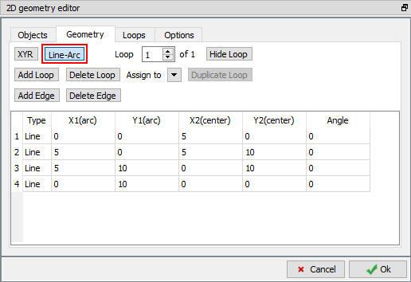
2D Geometry Editor with Line-Arc Geo type
Add Loop :By clicking on this button adds the new loop,this option is required to define topology for multi-boundary objects .
Delete Loop : Deletes the existing loop.
Add Vertex : By clicking on this button adds the new vertex to the loop.
Delete Vertex : Deletes the existing vertex in the loop.
Assign to : Using this user can assign the selected loop to any object geometry.
Objects Tab
Under Objects tab, we can select the object in list to hide the selected object geometry in graphical display window,when they are more than one objects geometries are displayed . (See Fig. 33.1.21.).
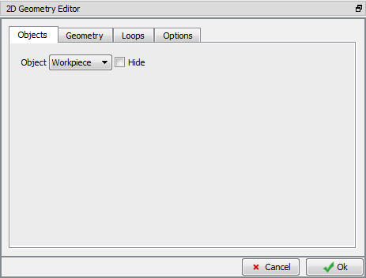
2D Geometry Editor objects window
Loops Tab
Under Loops tab, we can load and assign the material for the selected loops. Also we can see the display of assigned material to the corresponding loop details.(See Fig. 33.1.22.)
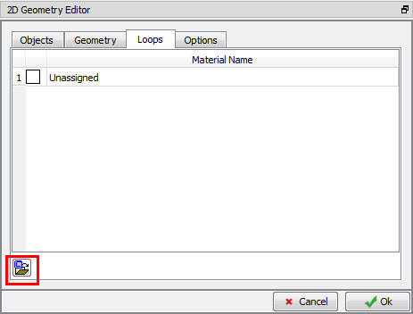
2D Geometry Editor materials window
Show geometry inside mark: Checking this option enables the Geometry orientation display.
Import Geometry from a file : It imports the geometry from a file
Load Geometry from Library :It imports geometry from Library
Save the Geometry to a file : It saves the Geometry to a file.
Save Geometry to Library : User can save geometry to the library using this option.
Delete Geometry : It deletes the created geometry.
Settings
2D Import
Tolerance
Sets the tolerance level for joining two boundary points which are close together when an object is imported in IGS and DXF geometry formats, and before transferring the data into DEFORM are defined here. (See Fig. 33.1.23.)
No. of discretization points
Text to be added.
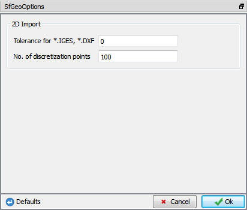
2D Geometry Tolerance window
Mesh
Below Fig. 33.1.24. shows the Mesh generation options in Guided mode. The number of elements to be generated for an object can be
specified merely by adjusting the slider bar and selecting an appropriate value for the current simulation in Number of Elements field. The mesh can be generated on an object by clicking  . feature deletes the generated mesh.
. feature deletes the generated mesh.
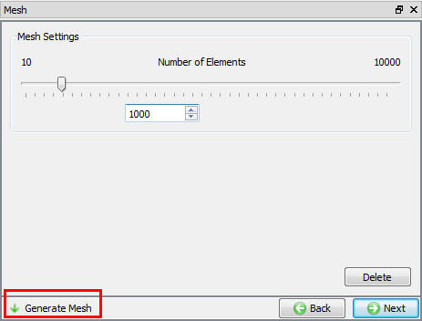
Mesh settings window in Guided mode
In order to control the mesh parameters like size, shape, density,type of element, etc..., user has to switch to expert mode  for more advanced mesh options. Below Fig. 33.1.25. shows the mesh options available from Expert mode.
for more advanced mesh options. Below Fig. 33.1.25. shows the mesh options available from Expert mode.
General Settings
The Mesh Generation window (See Fig. 33.1.25.) allows the user to generate a mesh for the current object. Mesh density can be controlled
either by system based on settings or User can assign the element size directly.
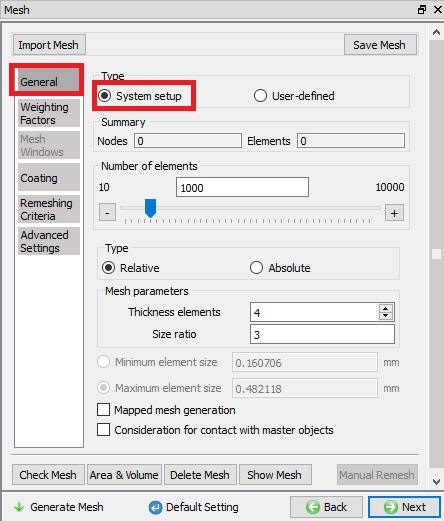
Expert mode mesh settings window
Material
Below Fig. 33.1.26. shows the material window. User can assign required material from the list or can import and save from file or library. User can
also add new material, even edit and delete the material in list from object material window. For more information on how to assign material, Please refer 10. Material Data.
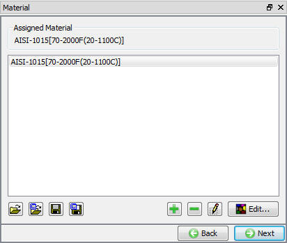
Material window
Once after adding material click on  button, material window will open as shown in in Fig. 10.9. The
properties required are dependent on the physical effects being simulated in DEFORM. The material properties that the user is required to specify is a function of the material types that the user is utilizing in the simulation. For more information, Please
refer 10. Material Data.
button, material window will open as shown in in Fig. 10.9. The
properties required are dependent on the physical effects being simulated in DEFORM. The material properties that the user is required to specify is a function of the material types that the user is utilizing in the simulation. For more information, Please
refer 10. Material Data.
Boundary Conditions
In Boundary conditions page, user can assign various boundary constraints for an object. Boundary conditions specify how the boundary of an object interacts with other objects and with the environment. The most commonly used boundary conditions are
heat exchange with the environment for simulations involving heat transfer, prescribed velocity for enforcing symmetry or prescribing movement in problems such as drawing where a part is pulled through a die, shrink fit for modelling shrink rings
on tooling, prescribed force for die stress analysis and Contact between objects in the model. Fig. 33.1.27. shows various BCC that can
be assigned to an object.
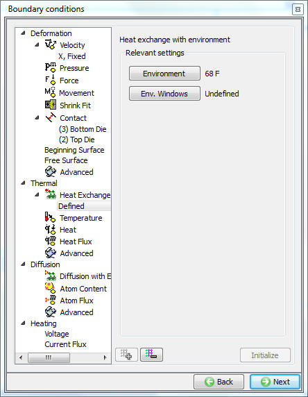
Boundary conditions window
The BCC’s are categorized as Deformation,Thermal, Diffusion and Heating. For more information about these BCC's please refer 14. Boundary Conditions.
Movement Controls
Movement controls can be applied to rigid objects and boundary nodes of meshed objects.The surface defined by these nodes can be thought of as a "rigid surface". During the simulation, the constrained nodes will move synchronously in the speed
and direction defined by the movement controls. Four types of Movement controls are available in 2D Environment.
Translational Movement
During the simulation the constrained nodes will move synchronously in the speed and direction defined by the movement controls. (See Fig. 33.1.28.)
Two types of Movement controls that are available in Translation Movement controls are Speed, Force,
Hammer, Screw press, Mechanical press,
Hydraulic press, Sliding Die and Path.
For more information, please refer 15. Movement controls settings.
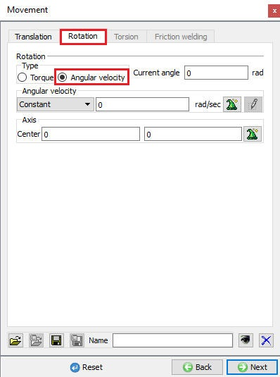
Translational Movement controls window
Rotational movement
Rotational movement is defined by an angular velocity/torque about a fixed center of rotation (See Fig. 33.1.29.). This movement
type causes only rotation. Unless otherwise specified, translation is constrained. The rotational speed is controlled through the Controlling Method option and the point at which the object is rotated about is set through the Center of Rotational
Movement. For more information, please refer, 15.9. Rotational movement.
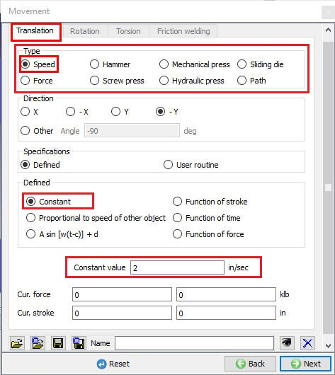
Rotational movement controls window
Torsional movement
Torsional movement controls are applicable only in the case of torsional formulations. This movement control option is active for DEFORM-2D only. For these movement settings see Fig. 33.1.30. For more information, please refer 15.10. Torsional movement.
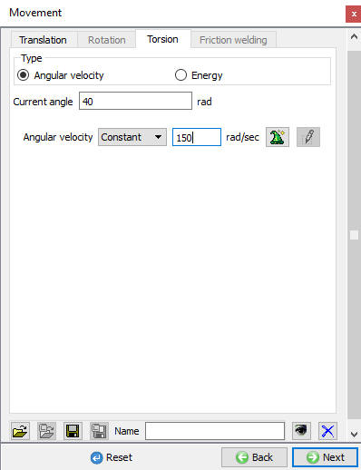
Torsional movement controls type
Friction Welding movement
Friction Welding movement controls are applicable only in the case of 2.5D Friction welding formulations. This movement control option is available for DEFORM-2D and active when 2.5D Friction welding Geometry type is selected from Simulation Controls
only. This movement can be used to define out of plane movement. For more information, please refer 15.11. Friction Welding movement.
For more information about these movement controls please refer 15_Movement Controls Settings.
Property
Miscellaneous object parameters, which affect either thermo-mechanical behavior of the object or numerical solution behavior are specified in the Object-Properties window. (See Fig. 33.1.31.).
For more information, Please refer 16. Object properties.
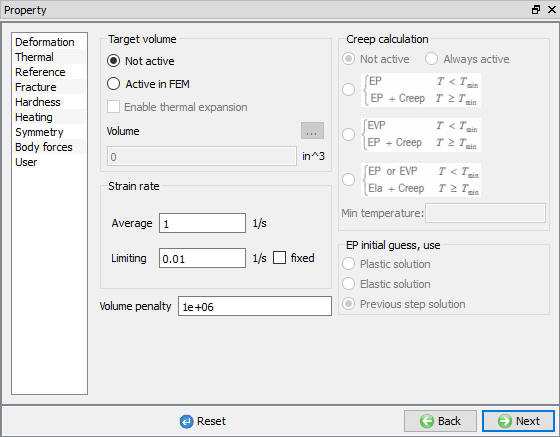
Property window
Initialize
In Initialize window, few state variables that are commonly used such as temperature, strain, stress, damage, velocity, displacement, density and microstructure grain size and particle size are made available for initialization.
User can initialize the values for these state variables by defining in the field next to it and clicking on  button. Fig. 33.1.32. shows the various state variables that are available in Initialize window. For state variable like velocity and displacement, provided input fields as many as dimensions, user needs to define the directional values of the variables in respective fields
and then clicking on button will calculate the total velocity and displacement. Depending on the type of state variable, user can also initialize them from
Node and Element data windows (See Fig. 33.1.33. and Fig. 33.2.34.).
For more information on how to initialize state variables in Node and Element windows, please refer 17.1. Object node variables and 17.2. Object element variables.
button. Fig. 33.1.32. shows the various state variables that are available in Initialize window. For state variable like velocity and displacement, provided input fields as many as dimensions, user needs to define the directional values of the variables in respective fields
and then clicking on button will calculate the total velocity and displacement. Depending on the type of state variable, user can also initialize them from
Node and Element data windows (See Fig. 33.1.33. and Fig. 33.2.34.).
For more information on how to initialize state variables in Node and Element windows, please refer 17.1. Object node variables and 17.2. Object element variables.
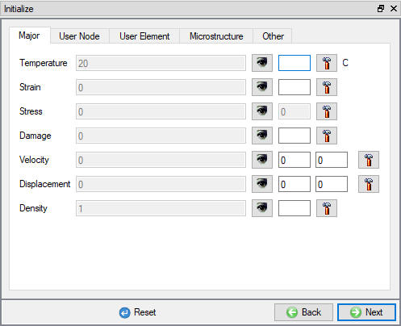
Initialize window
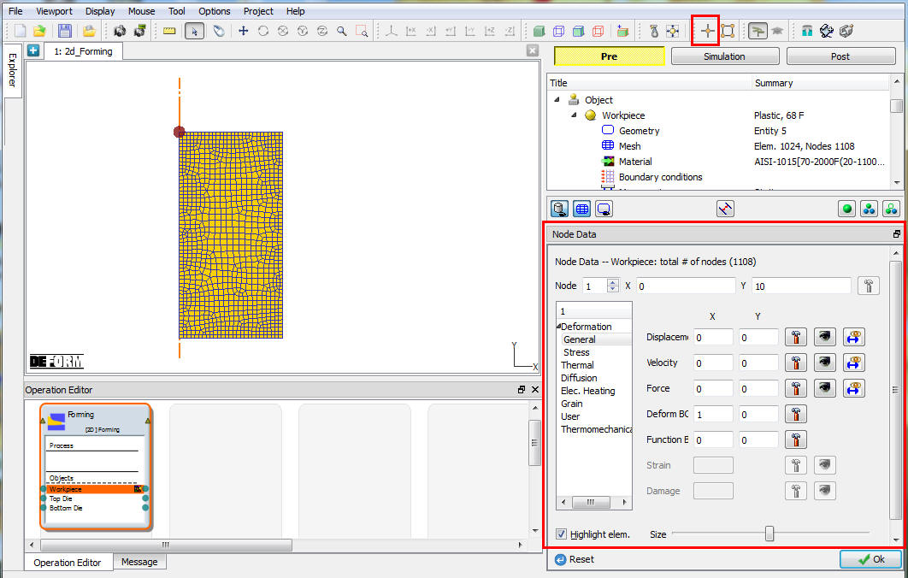
Node Data window
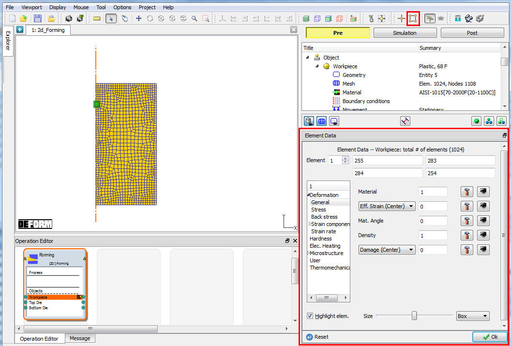
Element Data window
Positioning
Below Fig. 33.1.35. shows the positioning window.
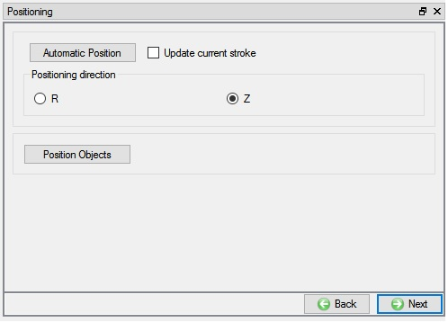
Positioning window
Automatic Positioning 
By clicking on this button, system automatically Positions the Objects with respect to the top die movement direction, this option works best for simple setup with three objects work piece, top die and bottom die.
Positioning Objects 
By clicking on this button, user can position the objects in required directions. Various types of Positioning Options are available such as Drag,
Offset, Interference, Flip and Rotational as shown in Fig. 33.1.36. For more information about these options, please refer 19. Object Positioning.
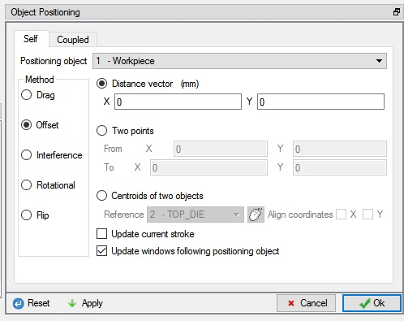
Object positioning window
Scheduled Positioning
When user is not sure about the location of an object as in case of Read From DB objects, scheduled positioning will help to position the objects accurately.
Schedule positioning allows the user to define the positioning for objects in MO setup for successive operations for which DB is not generated so that the objects are positioned before generation of DB while running simulation in Batch mode.(See
Fig. 33.1.37.)
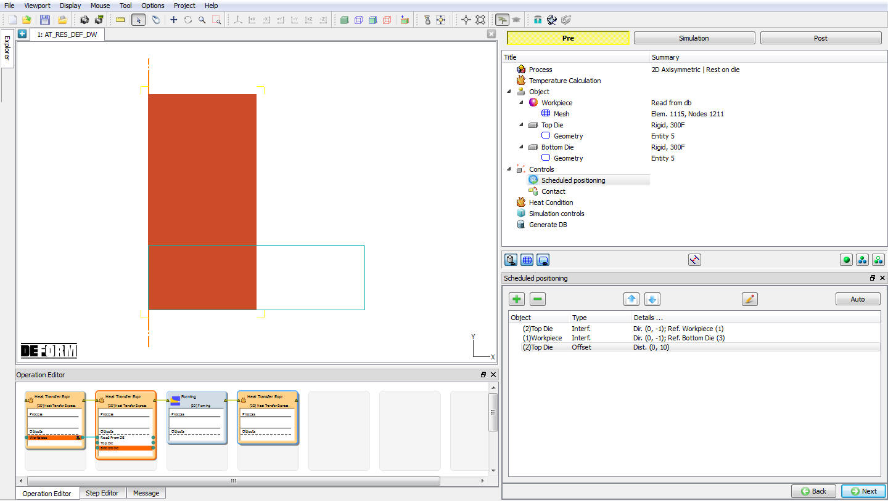
Scheduled Positioning window
Contact (Inter-Object relations)
The purpose of inter-object relations is to define how the different objects in a simulation interact with each other. The relations table shows the current inter object relations that have been defined as shown in Fig. 33.1.38. All objects which may come in contact with each other through the course of the simulation must have a contact relation defined. This includes an object having a relationship to itself, if self-contact occurs as in case of lap. It is very important
to define these relationships correctly for a simulation to model a forming process accurately.
System: By selecting this radio button, system assigns default inter-object relationships. Also user can add the lubricants if necessary by selecting Add New from pull down menu and clicking on "Edit" button or user can load
the required lubricants from the library for the simulation.
User: By default, user radio button will be selected for Forming operation. User can add relationships by clicking on Add button as shown in Fig. 33.1.38.
For more information please refer, 20. Inter-Object Relations
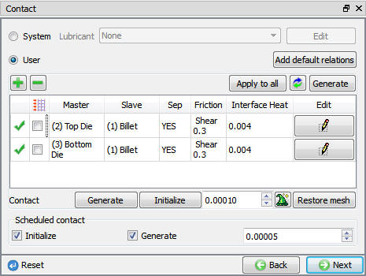
Inter-Object definition window
Stopping Controls
The stopping parameters determine the process time at which the simulation terminates. A simulation can be terminated based on maximum number of time steps simulated or the maximum accumulated elemental strain or the maximum process time or maximum
stroke or minimum velocity or maximum load on the primary object. A simulation will be stopped when the condition of any of the stopping parameters are met.
For more information, please refer Stopping Controls in Forming 3D setup.
Simulation controls
The DEFORM system solves time dependent non-linear problems by generating a series of FEM solutions at discrete time increments. At each time increment, the velocities, temperatures, and other key variables of each node in the finite element mesh are
determined based on boundary conditions, thermo mechanical properties of the workpiece materials and possibly solutions at previous steps. Other state variables are derived from these key values, and updated for each time increment. The length of this
time step, and number of steps simulated, are determined based on the information specified in the step controls menu.
In Guided mode simulation controls, user can select Simulation mode type and Output type. Fig. 33.1.40. Shows Guided mode simulation
controls. Fig. 33.1.39. Shows Guided mode Step page, where user can defined operation step controls and step definition. The basic options
required for forming operation are provided here while Expert mode provides more detailed options.
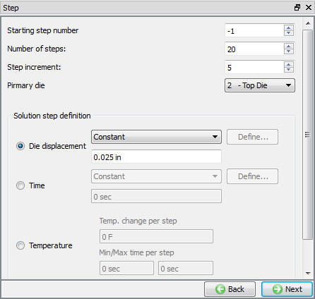
Guided mode Step window
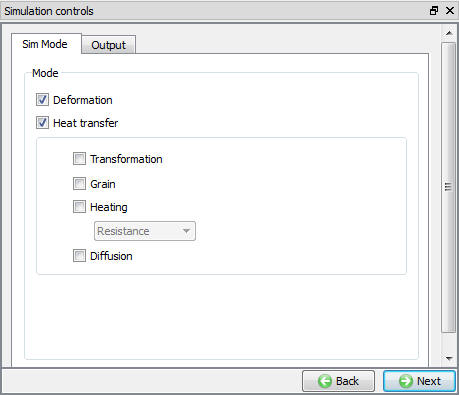
Guided mode Simulation controls
Number of simulation steps (NSTEP)
The number of simulation steps parameter defines the number of steps to run from the starting step number. The simulation will stop after this number of simulation steps have run, unless stopping control is triggered to stop the simulation or if the
simulation runs into a problem. For example, if the starting step number is -35 (NSTART), and 30 steps (NSTEP) are specified, the simulation
will stop after the 65th step, unless another stopping control is triggered first.
Step increment to save (STPINC)
The step increment (STPINC) to save in the database controls the number of steps that the system will save in the database. When a simulation runs, every step must be computed, but does not necessarily
need to be saved in the database. Storing more steps will preserve more information about the process, consequently it will require more storage space.
Primary die (PDIE)
The primary die (PDIE) is the object for which many stopping and stepping criteria are defined. For example, stopping distance based on primary die stroke. When the stroke of the object defined as
the primary die reaches the value for primary die displacement, the simulation will be stopped whether or not more steps were specified. The Step by Stroke feature determines step size based on the movement of the primary die. The primary die is usually
assigned to the object most closely controlled by the forging machinery. For example, the die attached to the ram of a mechanical press would be designated as the primary object.
Step increment control (DSMAX/DTMAX)
Solution step size can be controlled by time step or by displacement of the primary die. If stroke per step is specified, the primary die will move the specified amount in each time step. The total movement of the primary die will be the displacement per
step multiplied by the total number of steps. If time per step is specified, the time interval per step will be used. The die displacement per step will be the time step times the die velocity.
Even the temperature based step controls (DTPMAX) settings control the time stepping. The purpose for these controls is to specify the time stepping of a simulation that is driven by thermal-induced
deformation.
The definition of step increment control have been enhanced to include both the time and stroke dependent step functions,these options are available under Expert mode. This means, step size (both time per step and stroke per step) can now be defined as
a function of time or stroke. This functionality enables finer resolution of saved model information, where it is desired. (typically towards the end of the stroke, where steep changes of die load and cavity filling or flash formation can take place)
Stroke per step is frequently more intuitive. However, time per step must be specified for any problem in which there is no die movement (such as heat transfer), or for any problem where force control is used.
Fig. 33.1.41. shows the Simulation Controls in Expert mode.
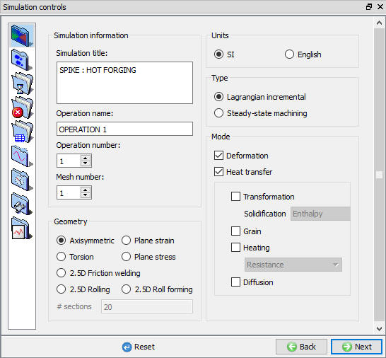
Expert mode Simulation controls window
Options defined under Simulation Controls (See Fig. 33.1.41.) control the numerical behavior of the solution. Main controls details
with specifying the simulation title, unit system, geometry type, etc.
Step and stopping controls are used to specify the time step, the total number of steps and the criteria used to terminate the simulation.
Processing conditions like the environment temperature, convection coefficient can be specified here.
For more information and description about options in Simulation controls, Please refer 9. Simulation Controls.
Generate DB
Check Data 
It checks the Data. If Data is correct we can generate DB. But while checking Data if it gives any errors or warnings then it should be corrected before generating Database. Errors will not allow the database to be generated while warnings will allow
the DB to be generated.
Generate Database 
By clicking on this button, it generated the Database for the setup.(See Fig. 33.1.42.)
Append Key file
Any information that is not defined in the wizard but still applicable to the process can be loaded as .key file. This option is also useful in the cases where only few values needs to be changed then those values can be defined as .key file and only .key
file can be changed and simulation can be resubmitted.
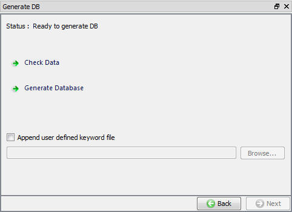
Generate DB window
Related Topics:
6.1. Integrated Manufacturing Process Pre- Processor Layout
6.2. Integrated Manufacturing Process.Simulation layout
6.3. Integrated Manufacturing Process Post - Processor layout
2D MO Basic Labs